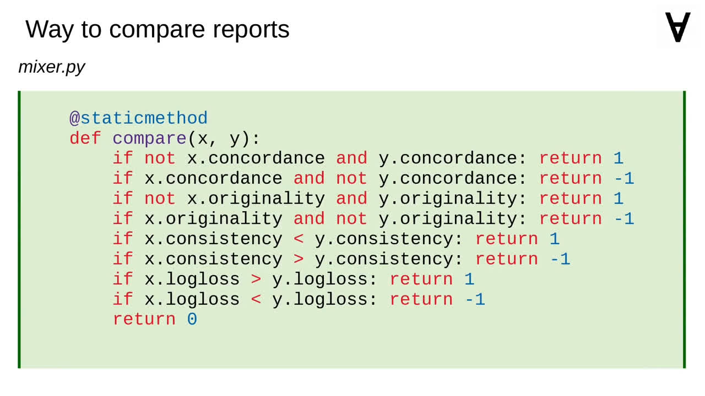
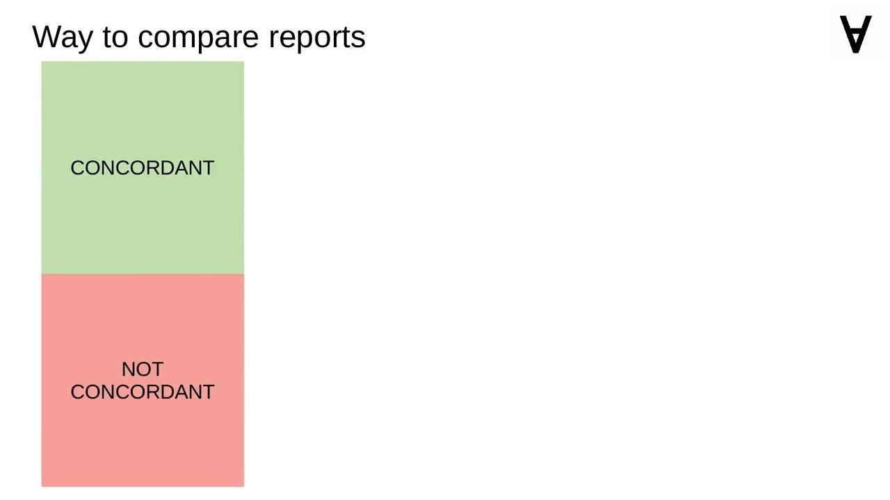
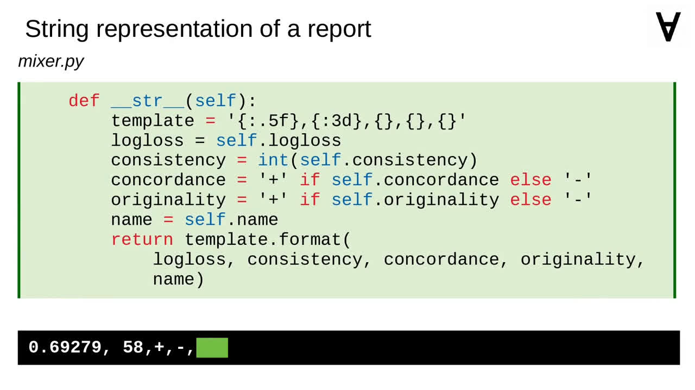

Numerai & ML - Part 7 - Concordant, original, 100% consistent
In previous two parts I covered creating a Luigi pipeline I called Explorer which is taking care of generation of prediction files with various models...
...and creation of Evaluator which was capturing those prediction files and submitting them automatically for evaluation by Numerai.
In this part I will reuse the code capturing files...
...and the code which looks up the data volume binding for the container.
Before I get to the core functionality of the mixer I need to create a class which will hold the report (including the path of the prediction file, name of the model and the results of the evaluation).

It is handy to have a method for comparing reports.

It will consider concordant predictions before non-concordant ones,
original before the unoriginal ones,
it will also consider predictions with higher consistency
and lower log-loss first.
To make it easier to compare reports I will add suitable operators to the class.

I will also add a method to return a simplified string representation of the report (see an example below).
Moving on to the main class of the Mixer it will be a thread started automatically which will capture report files and keep them in a sorted list and collect them in a look-up table (with the name of the model as a key).
The thread will collect all the reports as they appear and create a ranking based on the rules described earlier.
The method collecting reports reads paths from the capture queue, creates the Report objects from the contents of the report files and puts them into the sorted list and the look-up table if they are new.
Having a sorted list of reports allows to generate a ranking file simply by iterating the list.
After the Explorer is finished the ranking file would look more or less like this. We want to combine those predictions somehow though to improve the results.
Let's introduce a way to encode and decode the names of combined predictions.
I also want to combine only the predictions which at least pass one of the admission criteria.
To combine the predictions we will go through the sorted list of reports and combine the best two which were not tried yet (meaning: the combination is neither among the available reports and nor is it waiting for evaluation).
You may have noticed that the method combining the predictions is called ensemble. Indeed, I am first collecting all the names of the prediction files to be combined, look up the data volume details...
...and I use the ensembling method implemented by Jim Fleming by running the container I created out of his code.
With this code in place let's have a look at the thread function again.
All we need to do now is add a call to the "mix" method.
Over time you will observe the ranking file being populated with various ensembles of the predictions from the base models. This simple method allowed me to reach very good results.
The only thing left is to collect the required modules...
...and use a Dockerfile very similar to the one used by Eveluator.
Here's the command to run the Docker container. It assumes that the current directory is going to be a volume to store all the data.